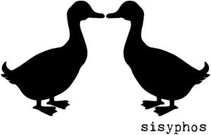

Trade Mark Journal No.2025/017 25 April 2025
WO0000001848835 (18,25,41)
Office of origin: Germany
Date of International Registration:14 October 2024
Date of designation in the UK:
14 October 2024

- Class 18
- Umbrellas and parasols; walking sticks; luggage, bags, wallets and carrying bags; leather and imitations of leather; furs and animal skins and articles thereof, namely labels, containers, straps and empty toiletry bags; saddlery, whips and apparel for animals; bucket bags; drawstring pouches.
- Class 25
- Headgear; clothing; underwear and nightwear; footwear; articles of clothing, footwear and headgear; socks; sweaters; tee-shirts; printed t-shirts; caps being headwear; cap peaks; sandals; infant wear; snap crotch shirts for infants and toddlers; overalls for infants and toddlers; shirts; children's wear; children's outerclothing; underwear.
- Class 41
- Publishing, reporting, and writing of texts; education, entertainment and sport services; organisation of conferences, exhibitions and competitions; gambling services; audio, video and multimedia production, and photography; sports and fitness services; education and instruction services; rental services relating to equipment and facilities for education, entertainment, sports and culture; library services and rental of entertainment media; rental of sports equipment and facilities; rental of audio/visual and photographic equipment and facilities; amusement and theme parks, fairs, zoos and museums; live performance services; video game services; translation and interpretation; ticket reservation and booking services for education, entertainment and sports activities and events; club education services; provision of club entertainment services; dance club services; providing dance hall facilities; provision of facilities for dancing; providing dance facilities; dance events; organization of dancing events; provision of entertainment facilities for dance events; production of music; live music performances; music publishing and music recording services; music mixing services; recording of music; entertainer services provided by musicians; arranging and conducting of workshops [training]; workshops for educational purposes; music education; music tuition by correspondence courses.
Julius Hausl
Lina Thiele
Representative: Rechtsanw. Kraus, Peter, Friedrichstr. 95, 10117 Berlin, GERMANY